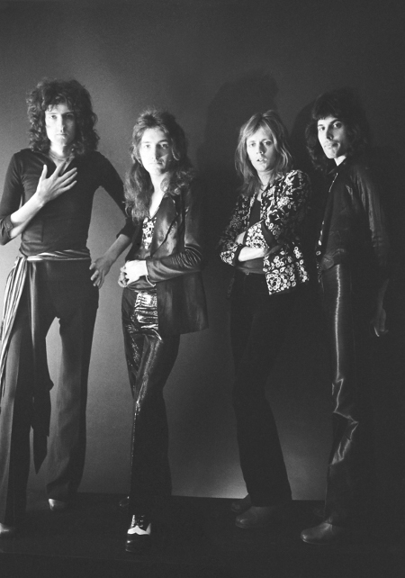

Quien era Freddy Mercury
Freddie Mercury fue un cantante, compositor y pianista británico, conocido principalmente como el vocalista principal de la banda de rock Queen. Nació en Zanzíbar en 1946 y se mudó a Inglaterra en su adolescencia. Junto con Queen, Mercury alcanzó fama mundial con canciones como "Bohemian Rhapsody", "We Will Rock You" y "We Are the Champions". También tuvo una carrera en solitario y colaboró con otros artistas, como Montserrat Caballé.
